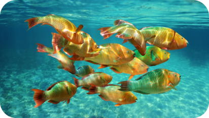

CARIBE
Guia de fretamento de iates de luxo para o Caribe
O Caribe é o posterfilho do estilo de vida do iate. Um lugar onde os invernos são esquecidos e a vida realmente se torna uma praia. Uma infinidade de ilhas brancas e azuis suaves convida dias embebidos em sol e rum. Lar de algumas das melhores faixas de areia do mundo, os amantes do oceano cairão facilmente pelos encantos da vela e do snorkeling. Mas além da praia, o Caribe mantém cantos selvagens com selvas profundas, pitons crescentes e uma infinita variedade de papagaios e baleias. Deslumbrante em sua diversidade, um momento você poderia estar cheirando rum em uma varanda pastel rangendo e o próximo champanhe rachando no brilho de St Barts - é a variedade voraz que faz do Caribe uma jóia de iate charter.
Onde No Mundo
Vinte e seis países de forma e tamanho variados ficam à deriva no Mar do Caribe, ao sudeste da América do Norte. Estas são as ilhas paradisíacas, onde setecentas ilhotas e gaias cobertas de floresta tropical, coral e areia fina acenam e chamam charters de iates que procuram sol para o inverno. No norte, você encontrará as Grandes Antilhas, no sul e leste sentam-se as Pequenas Antilhas, e espalhadas ao redor de você tem o blues arejado de Barbados, as maravilhosas Ilhas Windward, as Ilhas Leeward, as Ilhas ABC e muito mais. Em suma, para aventureiros charter de iates - há uma ilha para se adequar a todos os humores.
Portos De Escala Favorecidos
As Ilhas Leeward e as Ilhas Windward são portos de escala perfeitos para cartas caribenhas que desejam essas aventuras piratas de cartões postais. São Vicente e Granadinas é cada centímetro tão exótico quanto parece com praias que farão você esfregar os olhos em interiores encantadores e esmeraldas. St Lucia também traz um toque de charme selvagem para a cena habitual da praia - os poderosos pitons e a vibração boutique proporcionam uma sensação de aventura indomável. Em Barbados é onde você encontrará um espírito de carnaval e amarrações de cultura. St Martin e St Barts são famosos por seu brilho e glamour, entregando mais do que um pouco de joie de vivre para convidados charter que gostam de seu sonho caribenho polvilhado com delicadeza francesa. Um dos destinos mais caros, St Barts possui a melhor aventura high-end para aqueles que preferem refeições e mimos Michelin em oposição aos contos de piratas. Os casa-de-mel irão gaga para as margens românticas de Turks e Caicos, onde as baleias costeçam as águas azul-turquesa e as margens desertas proporcionam uma memorável mise-en-cena para piqueniques e passeios ao luar.